16. [Cours] : Sécuriser l'accès à un service web avec Spring Security
Mots clés : architecture multicouche, Spring, injection de dépendances, service web / jSON sécurisé, client / serveur
16.1. Support
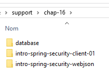 | 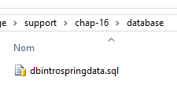 |
Les projets de ce chapitre seront trouvés dans le dossier [support / chap-16]. Le script SQL sert à générer la base de données nécessaire aux tests.
16.2. La place de Spring Security dans une application Web
Situons Spring Security dans le développement d'une application Web. Le plus souvent, celle-ci sera bâtie sur une architecture multicouche telle que la suivante :
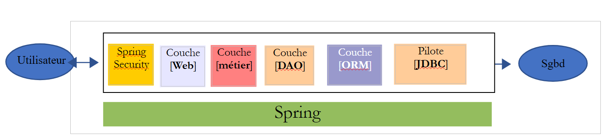 |
- la couche [Spring Security] n'accorde l'accès à la couche [web] qu'aux utilisateurs autorisés.
16.3. Un tutoriel sur Spring Security
Nous allons de nouveau importer un guide Spring en suivant les étapes 1 à 3 ci-dessous :
 |
 |
Le projet se compose des éléments suivants :
- dans le dossier [templates], on trouve les pages HTML du projet ;
- [Application] : est la classe exécutable du projet ;
- [MvcConfig] : est la classe de configuration de Spring MVC ;
- [WebSecurityConfig] : est la classe de configuration de Spring Security ;
16.3.1. Configuration Maven
Le projet [3] est un projet Maven. Examinons son fichier [pom.xml] pour connaître ses dépendances :
<?xml version="1.0" encoding="UTF-8"?>
<project xmlns="http://maven.apache.org/POM/4.0.0" xmlns:xsi="http://www.w3.org/2001/XMLSchema-instance"
xsi:schemaLocation="http://maven.apache.org/POM/4.0.0 http://maven.apache.org/xsd/maven-4.0.0.xsd">
<modelVersion>4.0.0</modelVersion>
<groupId>org.springframework</groupId>
<artifactId>gs-securing-web</artifactId>
<version>0.1.0</version>
<parent>
<groupId>org.springframework.boot</groupId>
<artifactId>spring-boot-starter-parent</artifactId>
<version>1.2.3.RELEASE</version>
</parent>
<dependencies>
<dependency>
<groupId>org.springframework.boot</groupId>
<artifactId>spring-boot-starter-thymeleaf</artifactId>
</dependency>
<!-- tag::security[] -->
<dependency>
<groupId>org.springframework.boot</groupId>
<artifactId>spring-boot-starter-security</artifactId>
</dependency>
<!-- end::security[] -->
</dependencies>
<properties>
<start-class>hello.Application</start-class>
</properties>
<build>
<plugins>
<plugin>
<groupId>org.springframework.boot</groupId>
<artifactId>spring-boot-maven-plugin</artifactId>
</plugin>
</plugins>
</build>
</project>
- lignes 10-14 : le projet est un projet Spring Boot ;
- lignes 17-20 : dépendance sur le framework [Thymeleaf] ;
- lignes 22-25 : dépendance sur le framework Spring Security ;
16.3.2. Les vues Thymeleaf
 |
La vue [home.html] est la suivante :
 |
<!DOCTYPE html>
<html xmlns="http://www.w3.org/1999/xhtml"
xmlns:th="http://www.thymeleaf.org"
xmlns:sec="http://www.thymeleaf.org/thymeleaf-extras-springsecurity3">
<head>
<title>Spring Security Example</title>
</head>
<body>
<h1>Welcome!</h1>
<p>
Click <a th:href="@{/hello}">here</a> to see a greeting.
</p>
</body>
</html>
- ligne 12 : l'attribut [th:href="@{/hello}"] va générer l'attribut [href] de la balise [<a>]. La valeur [@{/hello}] va générer le chemin [<context>/hello] où [context] est le contexte de l'application web ;
Le code HTML généré est le suivant :
<!DOCTYPE html>
<html xmlns="http://www.w3.org/1999/xhtml" xmlns:sec="http://www.thymeleaf.org/thymeleaf-extras-springsecurity3">
<head>
<title>Spring Security Example</title>
</head>
<body>
<h1>Welcome!</h1>
<p>
Click
<a href="/hello">here</a>
to see a greeting.
</p>
</body>
</html>
La vue [hello.html] est la suivante :
 |
<!DOCTYPE html>
<html xmlns="http://www.w3.org/1999/xhtml"
xmlns:th="http://www.thymeleaf.org"
xmlns:sec="http://www.thymeleaf.org/thymeleaf-extras-springsecurity3">
<head>
<title>Hello World!</title>
</head>
<body>
<h1 th:inline="text">Hello [[${#httpServletRequest.remoteUser}]]!</h1>
<form th:action="@{/logout}" method="post">
<input type="submit" value="Sign Out" />
</form>
</body>
</html>
- ligne 9 : L'attribut [th:inline="text"] va générer le texte de la balise [<h1>]. Ce texte contient une expression $ qui doit être évaluée. L'élément [[${#httpServletRequest.remoteUser}]] est la valeur de l'attribut [RemoteUser] de la requête HTTP courante. C'est le nom de l'utilisateur connecté ;
- ligne 10 : un formulaire HTML. L'attribut [th:action="@{/logout}"] va générer l'attribut [action] de la balise [form]. La valeur [@{/logout}] va générer le chemin [<context>/logout] où [context] est le contexte de l'application web ;
Le code HTML généré est le suivant :
<!DOCTYPE html>
<html xmlns="http://www.w3.org/1999/xhtml" xmlns:sec="http://www.thymeleaf.org/thymeleaf-extras-springsecurity3">
<head>
<title>Hello World!</title>
</head>
<body>
<h1>Hello user!</h1>
<form method="post" action="/logout">
<input type="submit" value="Sign Out" />
<input type="hidden" name="_csrf" value="b152e5b9-d1a4-4492-b89d-b733fe521c91" />
</form>
</body>
</html>
- ligne 8 : la traduction de Hello [[${#httpServletRequest.remoteUser}]]!;
- ligne 9 : la traduction de @{/logout} ;
- ligne 11 : un champ caché appelé (attribut name) _csrf ;
La vue [login.html] est la suivante :
 |
<!DOCTYPE html>
<html xmlns="http://www.w3.org/1999/xhtml"
xmlns:th="http://www.thymeleaf.org"
xmlns:sec="http://www.thymeleaf.org/thymeleaf-extras-springsecurity3">
<head>
<title>Spring Security Example</title>
</head>
<body>
<div th:if="${param.error}">Invalid username and password.</div>
<div th:if="${param.logout}">You have been logged out.</div>
<form th:action="@{/login}" method="post">
<div>
<label> User Name : <input type="text" name="username" />
</label>
</div>
<div>
<label> Password: <input type="password" name="password" />
</label>
</div>
<div>
<input type="submit" value="Sign In" />
</div>
</form>
</body>
</html>
- ligne 9 : l'attribut [th:if="${param.error}"] fait que la balise <div> ne sera générée que si l'URL qui affiche la page de login contient le paramètre [error] (http://context/login?error);
- ligne 10 : l'attribut [th:if="${param.logout}"] fait que la balise <div> ne sera générée que si l'URL qui affiche la page de login contient le paramètre [logout] (http://context/login?logout);
- lignes 11-23 : un formulaire HTML ;
- ligne 11 : le formulaire sera posté à l'URL [<context>/login] où <context> est le contexte de l'application web ;
- ligne 13 : un champ de saisie nommé [username] ;
- ligne 17 : un champ de saisie nommé [password] ;
Le code HTML généré est le suivant :
<!DOCTYPE html>
<html xmlns="http://www.w3.org/1999/xhtml" xmlns:sec="http://www.thymeleaf.org/thymeleaf-extras-springsecurity3">
<head>
<title>Spring Security Example </title>
</head>
<body>
<div>
You have been logged out.
</div>
<form method="post" action="/login">
<div>
<label>
User Name :
<input type="text" name="username" />
</label>
</div>
<div>
<label>
Password:
<input type="password" name="password" />
</label>
</div>
<div>
<input type="submit" value="Sign In" />
</div>
<input type="hidden" name="_csrf" value="ef809b0a-88b4-4db9-bc53-342216b77632" />
</form>
</body>
</html>
On notera ligne 28 que Thymeleaf a ajouté un champ caché nommé [_csrf].
16.3.3. Configuration Spring MVC
 |
La classe [MvcConfig] configure le framework Spring MVC :
package hello;
import org.springframework.context.annotation.Configuration;
import org.springframework.web.servlet.config.annotation.ViewControllerRegistry;
import org.springframework.web.servlet.config.annotation.WebMvcConfigurerAdapter;
@Configuration
public class MvcConfig extends WebMvcConfigurerAdapter {
@Override
public void addViewControllers(ViewControllerRegistry registry) {
registry.addViewController("/home").setViewName("home");
registry.addViewController("/").setViewName("home");
registry.addViewController("/hello").setViewName("hello");
registry.addViewController("/login").setViewName("login");
}
}
- ligne 7 : l'annotation [@Configuration] fait de la classe [MvcConfig] une classe de configuration ;
- ligne 8 : la classe [MvcConfig] étend la classe [WebMvcConfigurerAdapter] pour en redéfinir certaines méthodes ;
- ligne 10 : redéfinition d'une méthode de la classe parent ;
- lignes 11- 16 : la méthode [addViewControllers] permet d'associer des URL à des vues HTML. Les associations suivantes y sont faites :
vue | |
/templates/home.html | |
/templates/hello.html | |
/templates/login.html |
Le suffixe [html] et le dossier [templates] sont les valeurs par défaut utilisées par Thymeleaf. Elles peuvent être changées par configuration. Le dossier [templates] doit être à la racine du Classpath du projet :
 |
Ci-dessus [1], les dossiers [java] et [resources] sont tous les deux des dossier source (source folders). Cela implique que leur contenu sera à la racine du Classpath du projet. Donc en [2], les dossiers [hello] et [templates] seront à la racine du Classpath.
16.3.4. Configuration Spring Security
 |
La classe [WebSecurityConfig] configure le framework Spring Security :
package hello;
import org.springframework.context.annotation.Configuration;
import org.springframework.security.config.annotation.authentication.builders.AuthenticationManagerBuilder;
import org.springframework.security.config.annotation.web.builders.HttpSecurity;
import org.springframework.security.config.annotation.web.configuration.WebSecurityConfigurerAdapter;
import org.springframework.security.config.annotation.web.servlet.configuration.EnableWebMvcSecurity;
@Configuration
@EnableWebMvcSecurity
public class WebSecurityConfig extends WebSecurityConfigurerAdapter {
@Override
protected void configure(HttpSecurity http) throws Exception {
http.authorizeRequests().antMatchers("/", "/home").permitAll().anyRequest().authenticated();
http.formLogin().loginPage("/login").permitAll().and().logout().permitAll();
}
@Override
protected void configure(AuthenticationManagerBuilder auth) throws Exception {
auth.inMemoryAuthentication().withUser("user").password("password").roles("USER");
}
}
- ligne 9 : l'annotation [@Configuration] fait de la classe [WebSecurityConfig] une classe de configuration ;
- ligne 10 : l'annotation [@EnableWebSecurity] fait de la classe [WebSecurityConfig] une classe de configuration de Spring Security ;
- ligne 11 : la classe [WebSecurity] étend la classe [WebSecurityConfigurerAdapter] pour en redéfinir certaines méthodes ;
- ligne 12 : redéfinition d'une méthode de la classe parent ;
- lignes 13- 16 : la méthode [configure(HttpSecurity http)] est redéfinie pour définir les droits d'accès aux différentes URL de l'application ;
- ligne 14 : la méthode [http.authorizeRequests()] permet d'associer des URL à des droits d'accès. Les associations suivantes y sont faites :
régle | code | |
accès sans être authentifié | | |
accès authentifié uniquement |
- ligne 15 : définit la méthode d'authentification. L'authentification se fait via un formulaire d'URL [/login] accessible à tous [http.formLogin().loginPage("/login").permitAll()]. La déconnexion (logout) est également accessible à tous ;
- lignes 19-21 : redéfinissent la méthode [configure(AuthenticationManagerBuilder auth)] qui gère les utilisateurs ;
- ligne 20 : l'autentification se fait avec des utilisateurs définis en " dur " [auth.inMemoryAuthentication()]. Un utilisateur est ici défini avec le login [user], le mot de passe [password] et le rôle [USER]. On peut accorder les mêmes droits à des utilisateurs ayant le même rôle ;
16.3.5. Classe exécutable
 |
La classe [Application] est la suivante :
package hello;
import org.springframework.boot.autoconfigure.EnableAutoConfiguration;
import org.springframework.boot.SpringApplication;
import org.springframework.context.annotation.ComponentScan;
import org.springframework.context.annotation.Configuration;
@EnableAutoConfiguration
@Configuration
@ComponentScan
public class Application {
public static void main(String[] args) throws Throwable {
SpringApplication.run(Application.class, args);
}
}
- ligne 8 : l'annotation [@EnableAutoConfiguration] demande à Spring Boot (ligne 3) de faire la configuration que le développeur n'aura pas fait explicitement ;
- ligne 9 : fait de la classe [Application] une classe de configuration Spring ;
- ligne 10 : demande le scan du dossier de la classe [Application] afin de rechercher des composants Spring. Les deux classes [MvcConfig] et [WebSecurityConfig] vont être ainsi découvertes car elles ont l'annotation [@Configuration] ;
- ligne 13 : la méthode [main] de la classe exécutable ;
- ligne 14 : la méthode statique [SpringApplication.run] est exécutée avec comme paramètre la classe de configuration [Application]. Nous avons déjà rencontré ce processus et nous savons que le serveur Tomcat embarqué dans les dépendances Maven du projet va être lancé et le projet déployé dessus. Nous avons vu que quatre URL étaient gérées [/, /home, /login, /hello] et que certaines étaient protégées par des droits d'accès.
16.3.6. Tests de l'application
Commençons par demander l'URL [/] qui est l'une des quatre URL acceptées. Elle est associée à la vue [/templates/home.html] :
 |
L'URL demandée [/] est accessible à tous. C'est pourquoi nous l'avons obtenue. Le lien [here] est le suivant :
L'URL [/hello] va être demandée lorsqu'on va cliquer sur le lien. Celle-ci est protégée :
règle | code | |
accès sans être authentifié | | |
accès authentifié uniquement |
Il faut être authentifié pour l'obtenir. Spring Security va alors rediriger le navigateur client vers la page d'authentification. D'après la configuration vue, c'est la page d'URL [/login]. Celle-ci est accessible à tous :
http.formLogin().loginPage("/login").permitAll().and().logout().permitAll();
Nous l'obtenons donc [1] :
 |
Le code source de la page obtenue est le suivant :
- ligne 7, un champ caché apparaît qui n'est pas dans la page [login.html] d'origine. C'est Thymeleaf qui l'a ajouté. Ce code appelé CSRF (Cross Site Request Forgery) vise à éliminer une faille de sécurité. Ce jeton doit être renvoyé à Spring Security avec l'authentification pour que cette dernière soit acceptée ;
Nous nous souvenons que seul l'utilisateur user/password est reconnu par Spring Security. Si nous entrons autre chose en [2], nous obtenons la même page avec un message d'erreur en [3]. Spring Security a redirigé le navigateur vers l'URL [http://localhost:8080/login?error]. La présence du paramètre [error] a déclenché l'affichage de la balise :
<div th:if="${param.error}">Invalid username and password.</div>
Maintenant, entrons les valeurs attendues user/password [4] :
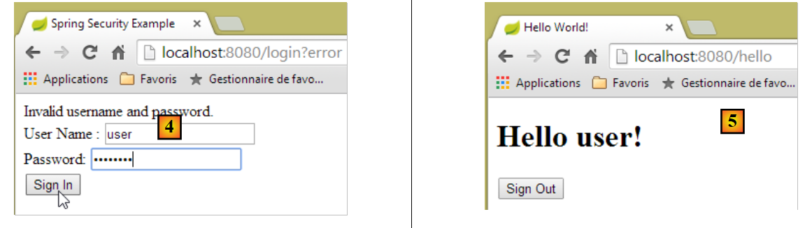 |
- en [4], nous nous identifions ;
- en [5], Spring Security nous redirige vers l'URL [/hello] car c'est l'URL que nous demandions lorsque nous avons été redirigés vers la page de login. L'identité de l'utilisateur a été affichée par la ligne suivante de [hello.html] :
<h1 th:inline="text">Hello [[${#httpServletRequest.remoteUser}]]!</h1>
La page [5] affiche le formulaire suivant :
<form th:action="@{/logout}" method="post">
<input type="submit" value="Sign Out" />
</form>
Lorsqu'on clique sur le bouton [Sign Out], un POST va être fait sur l'URL [/logout]. Celle-ci comme l'URL [/login] est accessible à tous :
http.formLogin().loginPage("/login").permitAll().and().logout().permitAll();
Dans notre association URL / vues, nous n'avons rien défini pour l'URL [/logout]. Que va-t-il se passer ? Essayons :
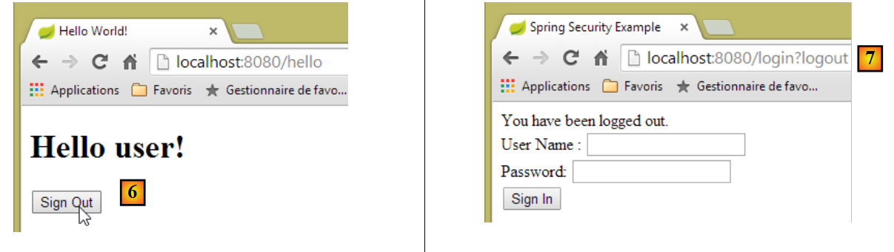 |
- en [6], nous cliquons sur le bouton [Sign Out] ;
- en [7], nous voyons que nous avons été redirigés vers l'URL [http://localhost:8080/login?logout]. C'est Spring Security qui a demandé cette redirection. La présence du paramètre [logout] dans l'URL a fait afficher la ligne suivante de la vue :
<div th:if="${param.logout}">You have been logged out.</div>
16.3.7. Conclusion
Dans l'exemple précédent, nous aurions pu écrire l'application web d'abord puis la sécuriser ensuite. Spring Security n'est pas intrusif. On peut mettre en place la sécurité d'une application web déjà écrite. Par ailleurs, nous avons découvert les points suivants :
- il est possible de définir une page d'authentification ;
- l'authentification doit être accompagnée du jeton CSRF délivré par Spring Security ;
- si l'authentification échoue, on est redirigé vers la page d'authentification avec de plus un paramètre error dans l'URL ;
- si l'authentification réussit, on est redirigé vers la page demandée lorsque l'authentification a eu lieu. Si on demande directement la page d'authentification sans passer par une page intermédiaire, alors Spring Security nous redirige vers l'URL [/] (ce cas n'a pas été présenté) ;
- on se déconnecte en demandant l'URL [/logout] avec un POST. Spring Security nous redirige alors vers la page d'authentification avec le paramètre logout dans l'URL ;
Toutes ces conclusions reposent sur des comportements par défaut de Spring Security. Ces comportements peuvent être changés par configuration en redéfinissant certaines méthodes de la classe [WebSecurityConfigurerAdapter].
Le tutoriel précédent nous aidera peu dans la suite. Nous allons en effet utiliser :
- une base de données pour stocker les utilisateurs, leurs mots de passe et leurs rôles ;
- une authentification par entête HTTP ;
On trouve assez peu de tutoriels pour ce qu'on veut faire ici. La solution qui va être proposée est un assemblage de codes trouvés ici et là.
16.4. Mise en place de la sécurité sur le service web / json des produits
16.4.1. La base de données
La base de données [dbintrospringdata] évolue pour prendre en compte les utilisateurs, leurs mots de passe et leur rôles. Trois nouvelles tables apparaissent :

Table [USERS] : les utilisateurs
- ID : clé primaire ;
- VERSION : colonne de versioning de la ligne ;
- IDENTITY : une identité descriptive de l'utilisateur ;
- LOGIN : le login de l'utilisateur ;
- PASSWORD : son mot de passe ;
Dans la table USERS, les mots de passe ne sont pas stockés en clair :
 |
L'algorithme qui crypte les mots de passe est l'algorithme BCRYPT.
Table [ROLES] : les rôles
- ID : clé primaire ;
- VERSION : colonne de versioning de la ligne ;
- NAME : nom du rôle. Par défaut, Spring Security attend des noms de la forme ROLE_XX, par exemple ROLE_ADMIN ou ROLE_GUEST ;
 |
Table [USERS_ROLES] : table de jointure USERS / ROLES
Un utilisateur peut avoir plusieurs rôles, un rôle peut rassembler plusieurs utilisateurs. On a une relation plusieurs à plusieurs matérialisée par la table [USERS_ROLES].
- ID : clé primaire ;
- VERSION : colonne de versioning de la ligne ;
- USER_ID : identifiant d'un utilisateur ;
- ROLE_ID : identifiant d'un rôle ;
 |
16.4.2. Le projet Eclipse
Nous créons le projet Eclipse suivant :
1  |
- en [1] : le nouveau projet avec les paquetages suivants :
- [spring.security.entities] : contient les entités JPA correspondant aux trois nouvelles tables de la base de données ;
- [spring.security.repositories] : contient les [repositories] de Spring Data associés aux trois nouvelles tables ;
- [spring.security.dao] : contient un service s'appuyant sur les [repositories] ;
- [spring.security.config] : contient la configuration du projet et notamment celle des accès sécurisés au service web ;
- [spring.security.boot] : conteint la classe de lancement du service web sécurisé ;
16.4.3. La configuration Maven
Le nouveau projet est un projet Maven configuré par le fichier [pom.xml] suivant :
<project xmlns="http://maven.apache.org/POM/4.0.0" xmlns:xsi="http://www.w3.org/2001/XMLSchema-instance"
xsi:schemaLocation="http://maven.apache.org/POM/4.0.0 http://maven.apache.org/xsd/maven-4.0.0.xsd">
<modelVersion>4.0.0</modelVersion>
<groupId>istia.st.spring.security</groupId>
<artifactId>intro-spring-security-server-01</artifactId>
<version>0.0.1-SNAPSHOT</version>
<name>intro-spring-security-server-01</name>
<description>démo spring security</description>
<properties>
<project.build.sourceEncoding>UTF-8</project.build.sourceEncoding>
<java.version>1.8</java.version>
</properties>
<parent>
<groupId>org.springframework.boot</groupId>
<artifactId>spring-boot-starter-parent</artifactId>
<version>1.2.7.RELEASE</version>
</parent>
<dependencies>
<dependency>
<groupId>istia.st.webjson</groupId>
<artifactId>intro-server-webjson-01</artifactId>
<version>0.0.1-SNAPSHOT</version>
</dependency>
<!-- Spring security -->
<dependency>
<groupId>org.springframework.boot</groupId>
<artifactId>spring-boot-starter-security</artifactId>
</dependency>
<!-- Spring logs -->
<dependency>
<groupId>org.springframework.boot</groupId>
<artifactId>spring-boot-starter-logging</artifactId>
</dependency>
<!-- Spring Boot -->
<dependency>
<groupId>org.springframework.boot</groupId>
<artifactId>spring-boot</artifactId>
</dependency>
<!-- Spring Boot Test -->
<dependency>
<groupId>org.springframework.boot</groupId>
<artifactId>spring-boot-starter-test</artifactId>
<scope>test</scope>
</dependency>
</dependencies>
<!-- plugins -->
<build>
<plugins>
<plugin>
<artifactId>maven-assembly-plugin</artifactId>
<configuration>
<descriptorRefs>
<descriptorRef>jar-with-dependencies</descriptorRef>
</descriptorRefs>
</configuration>
</plugin>
<plugin>
<groupId>org.apache.maven.plugins</groupId>
<artifactId>maven-surefire-plugin</artifactId>
<version>2.18.1</version>
</plugin>
</plugins>
</build>
</project>
- lignes 23-27 : on reprend l'existant avec l'archive du service web / json étudié ;
- lignes 29-32 : la dépendance qui amène les classes de Spring Security ;
- lignes 34-37 : la bibliothèque de logs ;
- lignes 39-42 : la bibliothèque permettant d'utiliser les annotations Spring Boot ;
- lignes 44-48 : la bibliothèque nécessaire aux tests ;
16.4.4. Les nouvelles entités [JPA]
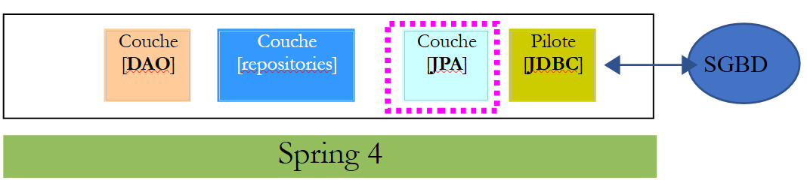 |
La couche JPA définit trois nouvelles entités :
 |
La classe [User] est l'image de la table [USERS] :
package spring.security.entities;
import javax.persistence.Column;
import javax.persistence.Entity;
import javax.persistence.Table;
import spring.data.entities.AbstractEntity;
@Entity
@Table(name = "USERS")
public class User extends AbstractEntity {
// propriétés
@Column(name = "NAME")
private String name;
@Column(name = "LOGIN")
private String login;
@Column(name = "PASSWORD")
private String password;
// constructeur
public User() {
}
public User(String name, String login, String password) {
this.name = name;
this.login = login;
this.password = password;
}
// getters et setters
...
}
- ligne 11 : la classe étend la classe [AbstractEntity] déjà utilisée pour les autres entités ;
La classe [Role] est l'image de la table [ROLES] :
package spring.security.entities;
import javax.persistence.Column;
import javax.persistence.Entity;
import javax.persistence.Table;
import spring.data.entities.AbstractEntity;
@Entity
@Table(name = "ROLES")
public class Role extends AbstractEntity {
// propriétés
@Column(name="NAME")
private String name;
// constructeurs
public Role() {
}
public Role(String name) {
this.name = name;
}
// getters et setters
public String getName() {
return name;
}
public void setName(String name) {
this.name = name;
}
}
La classe [UserRole] est l'image de la table [USERS_ROLES] :
package spring.security.entities;
import javax.persistence.Column;
import javax.persistence.Entity;
import javax.persistence.JoinColumn;
import javax.persistence.ManyToOne;
import javax.persistence.Table;
import spring.data.entities.AbstractEntity;
@Entity
@Table(name = "USERS_ROLES")
public class UserRole extends AbstractEntity {
// les clés étrangères
@Column(name = "USER_ID", insertable = false, updatable = false)
private Long userId;
@Column(name = "ROLE_ID", insertable = false, updatable = false)
private Long roleId;
// un UserRole référence un User
@ManyToOne
@JoinColumn(name = "USER_ID")
private User user;
// un UserRole référence un Role
@ManyToOne
@JoinColumn(name = "ROLE_ID")
private Role role;
// constructeurs
public UserRole() {
}
public UserRole(User user, Role role) {
this.user = user;
this.role = role;
}
// getters et setters
...
}
- lignes 22-24 : matérialisent la clé étrangère de la table [USERS_ROLES] vers la table [USERS] ;
- lignes 27-29 : matérialisent la clé étrangère de la table [USERS_ROLES] vers la table [ROLES] ;
16.4.5. Les [repositories]
 |
Chacune des entités JPA précédentes est gérée par un [repository] Spring Data :
 |
L'interface [UserRepository] gère les accès aux entités [User] :
package spring.security.repositories;
import org.springframework.data.jpa.repository.Query;
import org.springframework.data.repository.CrudRepository;
import spring.security.entities.Role;
import spring.security.entities.User;
public interface UserRepository extends CrudRepository<User, Long> {
// liste des rôles d'un utilisateur identifié par son id
@Query("select ur.role from UserRole ur where ur.user.id=?1")
Iterable<Role> getRoles(long id);
// liste des rôles d'un utilisateur identifié par son login unique
@Query("select ur.role from UserRole ur where ur.user.login=?1 and ur.user.password=?2")
Iterable<Role> getRoles(String login, String password);
// recherche d'un utilisateur via son login
User findUserByLogin(String login);
}
- ligne 9 : l'interface [UserRepository] étend l'interface [CrudRepository] de Spring Data (ligne 4) ;
- lignes 12-13 : la méthode [getRoles(User user)] permet d'avoir tous les rôles d'un utilisateur identifié par son [id]
- lignes 16-17 : idem mais pour un utilisateur identifié pas ses login / mot de passe ;
- ligne 20 : pour trouver un utilisateur via son login ;
L'interface [RoleRepository] gère les accès aux entités [Role] :
package spring.security.repositories;
import org.springframework.data.repository.CrudRepository;
import spring.security.entities.Role;
public interface RoleRepository extends CrudRepository<Role, Long> {
// recherche d'un rôle via son nom
Role findRoleByName(String name);
}
- ligne 7 : l'interface [RoleRepository] étend l'interface [CrudRepository] ;
- ligne 10 : on peut chercher un rôle via son nom ;
L'interface [UserRoleRepository] gère les accès aux entités [UserRole] :
package spring.security.repositories;
import org.springframework.data.repository.CrudRepository;
import spring.security.entities.UserRole;
public interface UserRoleRepository extends CrudRepository<UserRole, Long> {
}
- ligne 5 : l'interface [UserRoleRepository] se contente d'étendre l'interface [CrudRepository] sans lui ajouter de nouvelles méthodes ;
16.4.6. Les classes de gestion des utilisateurs et des rôles
 |
 |
Spring Security impose la création d'une classe implémentant l'interface [UsersDetail] suivante :
 |
Cette interface est ici implémentée par la classe [AppUserDetails] :
package spring.security.dao;
import java.util.ArrayList;
import java.util.Collection;
import org.springframework.security.core.GrantedAuthority;
import org.springframework.security.core.authority.SimpleGrantedAuthority;
import org.springframework.security.core.userdetails.UserDetails;
import spring.security.entities.Role;
import spring.security.entities.User;
import spring.security.repositories.UserRepository;
public class AppUserDetails implements UserDetails {
private static final long serialVersionUID = 1L;
// propriétés
private User user;
private UserRepository userRepository;
// constructeurs
public AppUserDetails() {
}
public AppUserDetails(User user, UserRepository userRepository) {
this.user = user;
this.userRepository = userRepository;
}
// -------------------------interface
@Override
public Collection<? extends GrantedAuthority> getAuthorities() {
Collection<GrantedAuthority> authorities = new ArrayList<>();
for (Role role : userRepository.getRoles(user.getId())) {
authorities.add(new SimpleGrantedAuthority(role.getName()));
}
return authorities;
}
@Override
public String getPassword() {
return user.getPassword();
}
@Override
public String getUsername() {
return user.getLogin();
}
@Override
public boolean isAccountNonExpired() {
return true;
}
@Override
public boolean isAccountNonLocked() {
return true;
}
@Override
public boolean isCredentialsNonExpired() {
return true;
}
@Override
public boolean isEnabled() {
return true;
}
// getters et setters
...
}
- ligne 14 : la classe [AppUserDetails] implémente l'interface [UserDetails] ;
- lignes 19-20 : la classe encapsule un utilisateur (ligne 19) et le repository qui permet d'avoir les détails de cet utilisateur (ligne 20) ;
- lignes 26-29 : le constructeur qui instancie la classe avec un utilisateur et son repository ;
- lignes 32-36 : implémentation de la méthode [getAuthorities] de l'interface [UserDetails]. Elle doit construire une collection d'éléments de type [GrantedAuthority] ou dérivé. Ici, nous utilisons le type dérivé [SimpleGrantedAuthority] (ligne 36) qui encapsule le nom d'un des rôles de l'utilisateur de la ligne 19 ;
- lignes 35-37 : on parcourt la liste des rôles de l'utilisateur de la ligne 19 pour construire une liste d'éléments de type [SimpleGrantedAuthority] ;
- lignes 42-44 : implémentent la méthode [getPassword] de l'interface [UserDetails]. On rend le mot de passe de l'utilisateur de la ligne 19 ;
- lignes 42-44 : implémentent la méthode [getUserName] de l'interface [UserDetails]. On rend le login de l'utilisateur de la ligne 19 ;
- lignes 51-54 : le compte de l'utilisateur n'expire jamais ;
- lignes 56-59 : le compte de l'utilisateur n'est jamais bloqué ;
- lignes 61-64 : les identifiants de l'utilisateur n'expirent jamais ;
- lignes 66-69 : le compte de l'utilisateur est toujours actif ;
Spring Security impose également l'existence d'une classe implémentant l'interface [AppUserDetailsService] :
 |
Cette interface est implémentée par la classe [AppUserDetailsService] suivante :
package spring.security.dao;
import org.springframework.beans.factory.annotation.Autowired;
import org.springframework.security.core.userdetails.UserDetails;
import org.springframework.security.core.userdetails.UserDetailsService;
import org.springframework.security.core.userdetails.UsernameNotFoundException;
import org.springframework.stereotype.Service;
import spring.security.entities.User;
import spring.security.repositories.UserRepository;
@Service
public class AppUserDetailsService implements UserDetailsService {
@Autowired
private UserRepository userRepository;
@Override
public UserDetails loadUserByUsername(String login) throws UsernameNotFoundException {
// on cherche l'utilisateur via son login
User user = userRepository.findUserByLogin(login);
// trouvé ?
if (user == null) {
throw new UsernameNotFoundException(String.format("login [%s] inexistant", login));
}
// on rend les détails de l'utilsateur
return new AppUserDetails(user, userRepository);
}
}
- ligne 12 : la classe sera un composant Spring, donc disponible dans son contexte ;
- lignes 15-16 : le composant [UserRepository] sera injecté ici ;
- lignes 19-28 : implémentation de la méthode [loadUserByUsername] de l'interface [UserDetailsService] (ligne 10). Le paramètre est le login de l'utilisateur ;
- ligne 21 : l'utilisateur est recherché via son login ;
- lignes 23-25 : s'il n'est pas trouvé, une exception est lancée ;
- ligne 27 : un objet [AppUserDetails] est construit et rendu. Il est bien de type [UserDetails] (ligne 19) ;
16.4.7. La configuration du projet
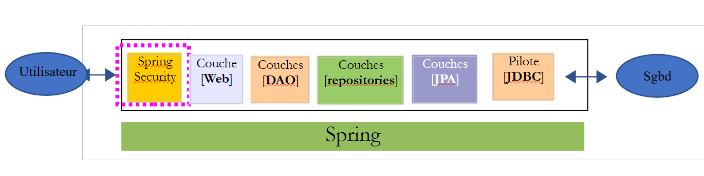 |
Le projet est configuré par deux classes :
 |
La classe [DaoConfig] configure la couche [DAO] amenée par le nouveau projet :
package spring.security.config;
import org.springframework.context.annotation.Bean;
import org.springframework.context.annotation.ComponentScan;
import org.springframework.context.annotation.Import;
import org.springframework.data.jpa.repository.config.EnableJpaRepositories;
@EnableJpaRepositories(basePackages = { "spring.security.repositories" })
@ComponentScan(basePackages = { "spring.security.dao" })
@Import({ spring.data.config.DaoConfig.class })
public class DaoConfig {
// constantes
final static private String[] ENTITIES_PACKAGES = { "spring.data.entities", "spring.security.entities" };
@Bean
public String[] packagesToScan() {
return ENTITIES_PACKAGES;
}
}
- ligne 10 : on importe la classe de configuration [spring.data.config.DaoConfig] du projet [intro-spring-data-01] qui implémente la couche [DAO] des produits et catégories ;
- ligne 8 : on désigne les dossiers du projet courant contenant des [repositories] Spring Data ;
- ligne 9 : on désigne les dossiers du projet courant contenant des composants Spring concernant la couche [DAO] ;
- ligne 14 : on désigne les dossiers contenant des entités JPA. Il y a celles du projet [intro-spring-data-01] et celles du projet du serveur sécurisé. Cette information fait l'objet du bean des lignes 16-19. Ce bean redéfinit le bean de même nom du projet [intro-spring-data-01] :
final static private String[] ENTITIES_PACKAGES = { "spring.data.entities" };
// EntityManagerFactory
@Bean
public EntityManagerFactory entityManagerFactory(JpaVendorAdapter jpaVendorAdapter, DataSource dataSource) {
LocalContainerEntityManagerFactoryBean factory = new LocalContainerEntityManagerFactoryBean();
factory.setJpaVendorAdapter(jpaVendorAdapter);
factory.setPackagesToScan(packagesToScan());
factory.setDataSource(dataSource);
factory.afterPropertiesSet();
return factory.getObject();
}
@Bean
public String[] packagesToScan() {
return ENTITIES_PACKAGES;
}
Dans la couche [DAO], la ligne 8 scanne les dossiers indiqués ligne 1. A cause de la redéfinition du bean des lignes 14-17 dans le projet sécurisé (lignes 16-19), la ligne 8 ci-dessus va désormais scanner les dossiers ["spring.data.entities", "spring.security.entities"]. Il est à noter que la classe importée ligne 10 de la classe [spring.security.config.DaoConfig] doit comporter l'annotation [@Configuration], sinon le phénomène qui vient d'être expliqué ne fonctionne pas.
La classe [SecurityConfig] configure l'aspect sécurité du projet. Nous avons déjà rencontré une classe de configuration de Spring Security :
package hello;
import org.springframework.context.annotation.Configuration;
import org.springframework.security.config.annotation.authentication.builders.AuthenticationManagerBuilder;
import org.springframework.security.config.annotation.web.builders.HttpSecurity;
import org.springframework.security.config.annotation.web.configuration.WebSecurityConfigurerAdapter;
import org.springframework.security.config.annotation.web.servlet.configuration.EnableWebMvcSecurity;
@Configuration
@EnableWebMvcSecurity
public class WebSecurityConfig extends WebSecurityConfigurerAdapter {
@Override
protected void configure(HttpSecurity http) throws Exception {
http.authorizeRequests().antMatchers("/", "/home").permitAll().anyRequest().authenticated();
http.formLogin().loginPage("/login").permitAll().and().logout().permitAll();
}
@Override
protected void configure(AuthenticationManagerBuilder auth) throws Exception {
auth.inMemoryAuthentication().withUser("user").password("password").roles("USER");
}
}
Nous allons suivre la même démarche :
- ligne 11 : définir une classe qui étend la classe [WebSecurityConfigurerAdapter] ;
- ligne 13 : définir une méthode [configure(HttpSecurity http)] qui définit les droits d'accès aux différentes URL du service web ;
- ligne 19 : définir une méthode [configure(AuthenticationManagerBuilder auth)] qui définit les utilisateurs et leurs rôles ;
La classe [SecurityConfig] sera la suivante :
package spring.security.config;
import org.springframework.beans.factory.annotation.Autowired;
import org.springframework.context.annotation.ComponentScan;
import org.springframework.context.annotation.Import;
import org.springframework.http.HttpMethod;
import org.springframework.security.config.annotation.authentication.builders.AuthenticationManagerBuilder;
import org.springframework.security.config.annotation.web.builders.HttpSecurity;
import org.springframework.security.config.annotation.web.configuration.EnableWebSecurity;
import org.springframework.security.config.annotation.web.configuration.WebSecurityConfigurerAdapter;
import org.springframework.security.config.http.SessionCreationPolicy;
import org.springframework.security.crypto.bcrypt.BCryptPasswordEncoder;
import spring.security.dao.AppUserDetailsService;
@EnableWebSecurity
@ComponentScan(basePackages = { "spring.security.service" })
@Import({ spring.webjson.config.AppConfig.class, DaoConfig.class })
public class SecurityConfig extends WebSecurityConfigurerAdapter {
@Autowired
private AppUserDetailsService appUserDetailsService;
// sécurisation
private boolean activateSecurity = true;
@Override
protected void configure(AuthenticationManagerBuilder registry) throws Exception {
// l'authentification est faite par le bean [appUserDetailsService]
// le mot de passe est crypté par l'algorithme de hachage BCrypt
registry.userDetailsService(appUserDetailsService).passwordEncoder(new BCryptPasswordEncoder());
}
@Override
protected void configure(HttpSecurity http) throws Exception {
// CSRF
http.csrf().disable();
// application sécurisée ?
if (activateSecurity) {
// le mot de passe est transmis par le header Authorization: Basic xxxx
http.httpBasic();
// la méthode HTTP OPTIONS doit être autorisée pour tous
http.authorizeRequests() //
.antMatchers(HttpMethod.OPTIONS, "/", "/**").permitAll();
// seul le rôle ADMIN peut utiliser l'application
http.authorizeRequests() //
.antMatchers("/", "/**") // toutes les URL
.hasRole("ADMIN");
// pas de session
http.sessionManagement().sessionCreationPolicy(SessionCreationPolicy.STATELESS);
}
}
}
- ligne 16 : pour activer les éléments de Spring Security ;
- ligne 17 : on rajoute les composants Spring du package [spring.security.service] ;
- ligne 18 : on importe les beans de la couche [DAO] que l'on vient de présenter ainsi que ceux du serveur web / jSON non sécurisé ;
- lignes 21-22 : la classe [AppUserDetails] qui donne accès aux utilisateurs de l'application est injectée ;
- ligne 25 : un booléen qui sécurise (true) ou non (false) l'application web ;
- lignes 27-32 : la méthode [configure(HttpSecurity http)] définit les utilisateurs et leurs rôles. Elle reçoit en paramètre un type [AuthenticationManagerBuilder]. Ce paramètre est enrichi de deux informations (ligne 38) :
- une référence sur le service [appUserDetailsService] de la ligne 22 qui donne accès aux utilisateurs enregistrés. On notera ici que le fait qu'ils soient enregistrés dans une base de données n'apparaît pas. Ils pourraient donc être dans un cache, délivrés par un service web, ...
- le type de cryptage utilisé pour le mot de passe. On rappelle ici que nous avons utilisé l'algorithme BCrypt ;
- lignes 34-52 : la méthode [configure(HttpSecurity http)] définit les droits d'accès aux URL du service web ;
- ligne 37 : nous avons vu dans le projet d'introduction que par défaut Spring Security gérait un jeton CSRF (Cross Site Request Forgery) que l'utilisateur qui voulait s'authentifier devait renvoyer au serveur. Ici ce mécanisme est désactivé. Ceci allié au booléen (isSecured=false) permet d'utiliser l'application web sans sécurité ;
- ligne 41 : on active le mode d'authentification par entête HTTP. Le client devra envoyer l'entête HTTP suivant :
où code est le codage de la chaîne login:password par l'algorithme Base64. Par exemple, le codage Base64 de la chaîne admin:admin est YWRtaW46YWRtaW4=. Donc l'utilisateur de login [admin] et de mot de passe [admin] enverra l'entête HTTP suivant pour s'authentifier :
- lignes 46-48 : indiquent que toutes les URL du service web sont accessibles aux utilisateurs ayant le rôle [ROLE_ADMIN]. Cela veut dire qu'un utilisateur n'ayant pas ce rôle ne peut accéder au service web ;
- ligne 50 : en mode [session], un utilisateur qui s'est authentifié une fois n'a pas besoin de le faire pour ses accès suivants. Ici on désactive ce mode, aussi l'utilisateur devra-t-il s'authentifier à chaque accès ;
16.4.8. Tests de la couche [DAO]
 |
 |
Tout d'abord, nous créons une classe exécutable [CreateUser] capable de créer un utilisateur avec un rôle :
package sprin.security.tests;
import org.springframework.context.annotation.AnnotationConfigApplicationContext;
import org.springframework.security.crypto.bcrypt.BCrypt;
import spring.security.config.DaoConfig;
import spring.security.entities.Role;
import spring.security.entities.User;
import spring.security.entities.UserRole;
import spring.security.repositories.RoleRepository;
import spring.security.repositories.UserRepository;
import spring.security.repositories.UserRoleRepository;
public class CreateUser {
public static void main(String[] args) {
// syntaxe : login password roleName
// il faut trois paramètres
if (args.length != 3) {
System.out.println("Syntaxe : [pg] user password role");
System.exit(0);
}
// on récupère les paramètres
String login = args[0];
String password = args[1];
String roleName = String.format("ROLE_%s", args[2].toUpperCase());
// contexte Spring
AnnotationConfigApplicationContext context = new AnnotationConfigApplicationContext(DaoConfig.class);
UserRepository userRepository = context.getBean(UserRepository.class);
RoleRepository roleRepository = context.getBean(RoleRepository.class);
UserRoleRepository userRoleRepository = context.getBean(UserRoleRepository.class);
// le rôle existe-t-il déjà ?
Role role = roleRepository.findRoleByName(roleName);
// s'il n'existe pas on le crée
if (role == null) {
role = roleRepository.save(new Role(roleName));
}
// l'utilisateur existe-t-il déjà ?
User user = userRepository.findUserByLogin(login);
// s'il n'existe pas on le crée
if (user == null) {
// on hashe le mot de passe avec bcrypt
String crypt = BCrypt.hashpw(password, BCrypt.gensalt());
// on sauvegarde l'utilisateur
user = userRepository.save(new User(login, login, crypt));
// on crée la relation avec le rôle
userRoleRepository.save(new UserRole(user, role));
} else {
// l'utilisateur existe déjà- a-t-il le rôle demandé ?
boolean trouvé = false;
for (Role r : userRepository.getRoles(user.getId())) {
if (r.getName().equals(roleName)) {
trouvé = true;
break;
}
}
// si pas trouvé, on crée la relation avec le rôle
if (!trouvé) {
userRoleRepository.save(new UserRole(user, role));
}
}
// fermeture contexte Spring
context.close();
// fin
System.out.println("Travail terminé...");
}
}
- ligne 17 : la classe attend trois arguments définissant un utilisateur : son login, son mot de passe, son rôle ;
- lignes 25-27 : les trois paramètres sont récupérés ;
- ligne 29 : le contexte Spring est construit à partir de la classe de configuration [AppConfig] ;
- lignes 30-32 : on récupère les références des trois [Repository] qui peuvent nous être utiles pour créer l'utilisateur ;
- ligne 34 : on regarde si le rôle existe déjà ;
- lignes 36-38 : si ce n'est pas le cas, on le crée en base. Il aura un nom du type [ROLE_XX] ;
- ligne 40 : on regarde si le login existe déjà ;
- lignes 42-49 : si le login n'existe pas, on le crée en base ;
- ligne 44 : on crypte le mot de passe. On utilise ici, la classe [BCrypt] de Spring Security (ligne 4). On a donc besoin des archives de ce framework. Le fichier [pom.xml] inclut cette dépendance :
<dependency>
<groupId>org.springframework.boot</groupId>
<artifactId>spring-boot-starter-security</artifactId>
</dependency>
- ligne 46 : l'utilisateur est persisté en base ;
- ligne 48 : ainsi que la relation qui le lie à son rôle ;
- lignes 51-57 : cas où le login existe déjà – on regarde alors si parmi ses rôles se trouve déjà le rôle qu'on veut lui attribuer ;
- ligne 59-61 : si le rôle cherché n'a pas été trouvé, on crée une ligne dans la table [USERS_ROLES] pour relier l'utilisateur à son rôle ;
- on ne s'est pas protégé des exceptions éventuelles. C'est une classe de soutien pour créer rapidement un utilisateur avec un rôle.
Lorsqu'on exécute la classe avec les arguments [x x guest], on obtient en base les résultats suivants :
Table [USERS]
 |
Table [ROLES]
 |
Table [USERS_ROLES]
 |
Considérons maintenant la seconde classe [UsersTest] qui est un test JUnit :
|
package spring.security.tests;
import java.util.List;
import org.junit.Assert;
import org.junit.Test;
import org.junit.runner.RunWith;
import org.springframework.beans.factory.annotation.Autowired;
import org.springframework.boot.test.SpringApplicationConfiguration;
import org.springframework.security.core.authority.SimpleGrantedAuthority;
import org.springframework.security.crypto.bcrypt.BCrypt;
import org.springframework.test.context.junit4.SpringJUnit4ClassRunner;
import com.fasterxml.jackson.core.JsonProcessingException;
import com.fasterxml.jackson.databind.ObjectMapper;
import com.google.common.collect.Lists;
import spring.security.config.DaoConfig;
import spring.security.dao.AppUserDetails;
import spring.security.dao.AppUserDetailsService;
import spring.security.entities.Role;
import spring.security.entities.User;
import spring.security.repositories.UserRepository;
@SpringApplicationConfiguration(classes = DaoConfig.class)
@RunWith(SpringJUnit4ClassRunner.class)
public class UsersTest {
@Autowired
private UserRepository userRepository;
@Autowired
private AppUserDetailsService appUserDetailsService;
// mappeur jSON
private ObjectMapper mapper = new ObjectMapper();
@Test
public void findAllUsersWithTheirRoles() throws JsonProcessingException {
Iterable<User> users = userRepository.findAll();
for (User user : users) {
System.out.println(String.format("\n----------Utilisateur [%s]",mapper.writeValueAsString(user)));
display("Roles :", userRepository.getRoles(user.getId()));
}
}
@Test
public void findUserByLogin() {
// on récupère l'utilisateur [admin]
User user = userRepository.findUserByLogin("admin");
// on vérifie que son mot de passe est [admin]
Assert.assertTrue(BCrypt.checkpw("admin", user.getPassword()));
// on vérifie le rôle de admin / admin
List<Role> roles = Lists.newArrayList(userRepository.getRoles("admin", user.getPassword()));
Assert.assertEquals(1L, roles.size());
Assert.assertEquals("ROLE_ADMIN", roles.get(0).getName());
}
@Test
public void loadUserByUsername() {
// on récupère l'utilisateur [admin]
AppUserDetails userDetails = (AppUserDetails) appUserDetailsService.loadUserByUsername("admin");
// on vérifie que son mot de passe est [admin]
Assert.assertTrue(BCrypt.checkpw("admin", userDetails.getPassword()));
// on vérifie le rôle de admin / admin
@SuppressWarnings("unchecked")
List<SimpleGrantedAuthority> authorities = (List<SimpleGrantedAuthority>) userDetails.getAuthorities();
Assert.assertEquals(1L, authorities.size());
Assert.assertEquals("ROLE_ADMIN", authorities.get(0).getAuthority());
}
// méthode utilitaire - affiche les éléments d'une collection
private void display(String message, Iterable<?> elements) throws JsonProcessingException {
System.out.println(message);
for (Object element : elements) {
System.out.println(mapper.writeValueAsString(element));
}
}
}
- lignes 37-44 : test visuel. On affiche tous les utilisateurs avec leurs rôles ;
- lignes 46-56 : on vérifie que l'utilisateur [admin] a le mot de passe [admin] et le rôle [ROLE_ADMIN] en utilisant le repository [UserRepository] ;
- ligne 51 : [admin] est le mot de passe en clair. En base, il est crypté selon l'algorithme BCrypt. La méthode [BCrypt.checkpw] permet de vérifier que le mot de passe en clair une fois crypté est bien égal à celui qui est en base ;
- lignes 58-69 : on vérifie que l'utilisateur [admin] a le mot de passe [admin] et le rôle [ROLE_ADMIN] en utilisant le service [appUserDetailsService] ;
L'exécution des tests réussit avec les logs suivants :
16.4.9. Tests du service web
Nous allons tester le service web avec le client Chrome [Advanced Rest Client]. Nous allons avoir besoin de préciser l'entête HTTP d'authentification :
où [code] est le code Base64 de la chaîne [login:password]. Pour générer ce code, on peut utiliser le programme suivant :
 |
package spring.security.helpers;
import org.springframework.security.crypto.codec.Base64;
public class Base64Encoder {
public static void main(String[] args) {
// on attend deux arguments : login password
if (args.length != 2) {
System.out.println("Syntaxe : login password");
System.exit(0);
}
// on récupère les deux arguments
String chaîne = String.format("%s:%s", args[0], args[1]);
// on encode la chaîne
byte[] data = Base64.encode(chaîne.getBytes());
// on affiche son encodage Base64
System.out.println(new String(data));
}
}
Si nous exécutons ce programme avec les deux arguments [admin admin] :
 |
nous obtenons le résultat suivant :
Maintenant que nous savons générer l'entête HTTP d'authentification, nous lançons le service web sécurisé, puis avec le client Chrome [Advanced Rest Client], nous demandons la liste des tous les produits :
 |
- en [1], nous demandons l'URL des catégories ;
- en [2], avec une méthode GET ;
- en [3], nous donnons l'entête HTTP de l'authentification. Le code [YWRtaW46YWRtaW4=] est le codage Base64 de la chaîne [admin:admin] ;
- en [4], nous envoyons la commande HTTP ;
La réponse du serveur est la suivante :
 |
- en [1], l'entête HTTP d'authentification ;
- en [2], le serveur renvoie une réponse jSON ;
On obtient bien la liste des catégories :
 |
Tentons maintenant une requête HTTP avec un entête d'authentification incorrect. La réponse est alors la suivante :
 |
- en [1] : l'entête HTTP d'authentification ;
Nous obtenons la réponse suivante :
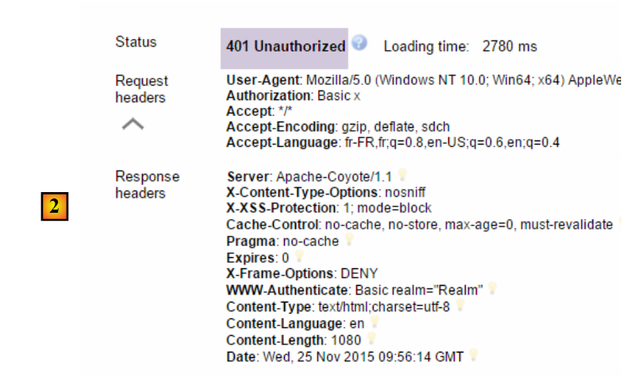 |
- en [2] : la réponse du service web ;
Maintenant, essayons l'utilisateur user / user. Il existe mais n'a pas accès au service web. Si nous exécutons le programme d'encodage Base64 avec les deux arguments [user user] :
 |
nous obtenons le résultat suivant :
 |
- en [1] : l'entête HTTP d'authentification erroné ;
 |
- en [2] : la réponse du service web. Elle est différente de la précédente qui était [401 Unauthorized]. Cette fois-ci, l'utilisateur s'est authentifié correctement mais n'a pas les droits suffisants pour accéder à l'URL ;
Notre service web sécurisé est désormais opérationnel.
16.4.10. Une URL d'authentification
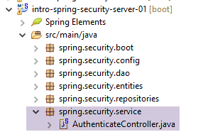 |
Nous allons créer une URL qui nous permettra de savoir si un utilisateur est autorisé ou non à accéder au service web. pour cela nous créons le nouveau contrôleur MVC [AuthenticateController] suivant :
package spring.security.service;
import org.springframework.beans.factory.annotation.Autowired;
import org.springframework.context.ApplicationContext;
import org.springframework.stereotype.Controller;
import org.springframework.web.bind.annotation.RequestMapping;
import org.springframework.web.bind.annotation.RequestMethod;
import org.springframework.web.bind.annotation.ResponseBody;
import com.fasterxml.jackson.core.JsonProcessingException;
import com.fasterxml.jackson.databind.ObjectMapper;
import spring.webjson.models.Response;
@Controller
public class AuthenticateController {
// dépendances Spring
@Autowired
private ApplicationContext context;
@RequestMapping(value = "/authenticate", method = RequestMethod.GET, produces = "application/json; charset=UTF-8")
@ResponseBody
public String authenticate() throws JsonProcessingException {
// réponse jSON
ObjectMapper mapperResponse = context.getBean(ObjectMapper.class);
return mapperResponse.writeValueAsString(new Response<Void>(0, null, null));
}
}
- ligne 15 : la classe [AuthenticateController] est un contrôleur Spring. A ce titre elle expose des URL ;
- ligne 22 : expose l'URL [/authenticate] ;
- ligne 23 : le résultat de la méthode sera envoyé directement au client ;
- lignes 26-27 : la méthode se contente de renvoyer un objet [Response] vide mais avec un [status] égal à 0, montrant qu'il n'y a pas eu d'erreur ;
A quoi sert cette URL ? Lorsque nous voudrons simplement authentifier un utilisateur, nous la demanderons. Nous avons vu que si la couche de sécurité n'accepte pas cet utilisateur, elle renvoie une exception. Voici un exemple ;
Avec l'utilisateur [admin:admin] :
 |  |
On a une réponse vide mais pas d'exception.
Avec l'utilisateur [user:user] :
 | 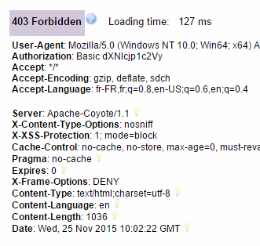 |
On a eu une exception.
16.4.11. Conclusion
L'ajout des classes nécessaires à Spring Security a pu se faire sans modifications du projet web / json originel. Ce cas très favorable découle du fait que les trois tables ajoutées dans la base de données sont indépendantes des tables existantes. On aurait même pu les mettre dans une base de données séparée. Dans d'autres cas, les tables ajoutées peuvent avoir des relations avec les tables existantes. Il faut alors modifier les entités JPA ce qui en général impacte toutes les couches du projet.
16.5. Un client programmé pour le service web / jSON sécurisé
Nous avons déjà écrit un client pour le service web / jSON non sécurisé :
 |
Nous allons maintenant créer un client programmé pour le service web sécurisé :
 |
Nous dupliquons le projet déjà écrit [intro-webjson-client] dans un nouveau projet [intro-spring-security-client-01] :
 |
16.5.1. La classe [AbstractDao]
La classe [AbstractDao] assure la communication HTTP avec le serveur web / jSON sécurisé. Comme nous venons de le voir, dans cette communication HTTP, le client doit désormais envoyer un entête d'authentification, par exemple :
Cela se fait de la façon suivante :
package spring.security.client.dao;
import java.net.URI;
...
public abstract class AbstractDao {
// data
@Autowired
protected RestTemplate restTemplate;
@Autowired
protected String urlServiceWebJson;
// requête générique
protected String getResponse(User user, String url, String jsonPost) {
// url : URL à contacter
- ligne 15 : la méthode générique [getResponse] en charge de la communication HTTP avec le service web sécurisé, admet désormais comme premier paramètre l'utilisateur qui demande une URL. La classe [User] est la suivante :
Cette classe est la suivante :
 |
package spring.security.client.entities;
public class User {
// propriétés
private String login;
private String password;
// constructeur
public User() {
}
public User(String login, String password) {
this.login = login;
this.password = password;
}
// getters et setters
...
}
La méthode [getResponse] devient alors la suivante :
package spring.security.client.dao;
import java.net.URI;
import java.net.URISyntaxException;
import java.util.Base64;
import org.springframework.beans.factory.annotation.Autowired;
import org.springframework.core.ParameterizedTypeReference;
import org.springframework.http.MediaType;
import org.springframework.http.RequestEntity;
import org.springframework.http.RequestEntity.BodyBuilder;
import org.springframework.http.RequestEntity.HeadersBuilder;
import org.springframework.web.client.RestTemplate;
import spring.security.client.entities.User;
public abstract class AbstractDao {
// data
@Autowired
protected RestTemplate restTemplate;
@Autowired
protected String urlServiceWebJson;
private String getBase64(User user) {
// on encode en base 64 l'utilisateur et son mot de passe - nécessite java 8
String chaîne = String.format("%s:%s", user.getLogin(), user.getPassword());
return String.format("Basic %s", new String(Base64.getEncoder().encode(chaîne.getBytes())));
}
// requête générique
protected String getResponse(User user, String url, String jsonPost) {
// url : URL à contacter
// jsonPost : la valeur jSON à poster
try {
// exécution requête
RequestEntity<?> request;
if (jsonPost == null) {
HeadersBuilder<?> headersBuilder = RequestEntity.get(new URI(String.format("%s%s", urlServiceWebJson, url)))
.accept(MediaType.APPLICATION_JSON);
if (user != null) {
headersBuilder = headersBuilder.header("Authorization", getBase64(user));
}
request = headersBuilder.build();
} else {
BodyBuilder bodyBuilder = RequestEntity.post(new URI(String.format("%s%s", urlServiceWebJson, url)))
.header("Content-Type", "application/json").accept(MediaType.APPLICATION_JSON);
if (user != null) {
bodyBuilder = bodyBuilder.header("Authorization", getBase64(user));
}
request = bodyBuilder.body(jsonPost);
}
// on exécute la requête
return restTemplate.exchange(request, new ParameterizedTypeReference<String>() {
}).getBody();
} catch (URISyntaxException e1) {
throw new DaoException(20, e1);
} catch (RuntimeException e2) {
throw new DaoException(21, e2);
}
}
}
- lignes 42-44, 49-51 : si l'utilisateur [user] n'est pas null, alors on ajoute l'entête d'authentification. L'encodage Base64 de l'utilisateur et de son mot de passe est assuré par la méthode [getBase64] des lignes 25-29. On fera attention au fait que cette méthode utilise une classe [Base64] appartenant au JDK 1.8.
- en-dehors des lignes précédentes, le code reste inchangé ;
16.5.2. L'interface [IDao]
Toutes les méthodes de l'interface [IDao] reçoivent un paramètre supplémentaire [User user] :
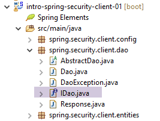 |
package spring.security.client.dao;
import java.util.List;
import spring.security.client.entities.Categorie;
import spring.security.client.entities.Produit;
import spring.security.client.entities.User;
public interface IDaoClient {
// authentification
public void authenticate(User user);
// insertion d'une liste de produits
public List<Produit> addProduits(User user, List<Produit> produits);
// suppression de tous les produits
public void deleteAllProduits(User user);
// mise à jour d'une liste de produits
public List<Produit> updateProduits(User user, List<Produit> produits);
// obtention de tous les produits
public List<Produit> getAllProduits(User user);
// insertion d'une liste de categories
public List<Categorie> addCategories(User user, List<Categorie> categories);
// suppression de tous les categories
public void deleteAllCategories(User user);
// mise à jour d'une liste de categories
public List<Categorie> updateCategories(User user, List<Categorie> categories);
// obtention de tous les categories
public List<Categorie> getAllCategories(User user);
// un produit particulier
public Produit getProduitByIdWithCategorie(User user, Long idProduit);
public Produit getProduitByIdWithoutCategorie(User user, Long idProduit);
public Produit getProduitByNameWithCategorie(User user, String nom);
public Produit getProduitByNameWithoutCategorie(User user, String nom);
// une catégorie particulière
public Categorie getCategorieByIdWithProduits(User user, Long idCategorie);
public Categorie getCategorieByIdWithoutProduits(User user, Long idCategorie);
public Categorie getCategorieByNameWithProduits(User user, String nom);
public Categorie getCategorieByNameWithoutProduits(User user, String nom);
}
- ligne 12 : nous avons ajouté la méthode [authenticate(User user)] pour authentifier un utilisateur. Elle lance une exception si l'utilsateur n'a pas le droit d'accéder à l'URL [/authenticate] du service web ;
16.5.3. La classe [Dao]
Toutes les méthodes de la classe [Dao] reçoivent un paramètre supplémentaire [User user] qu'elles passent à la méthode générique [getResponse] de la classe [AbstractDao]. Voici deux exemples :
// authentification
@Override
public void authenticate(User user) {
getResponse(user, "/authenticate", null);
}
@Override
public List<Produit> addProduits(User user, List<Produit> produits) {
// ----------- ajouter des produits (sans leur catégorie)
try {
// mappeurs jSON
ObjectMapper mapperPost = context.getBean(ObjectMapper.class);
mapperPost.setFilters(jsonFilterProduitWithoutCategorie);
ObjectMapper mapperResponse = mapperPost;
// requête
Response<List<Produit>> response = mapperResponse.readValue(
getResponse(user, "/addProduits", mapperPost.writeValueAsString(produits)),
new TypeReference<Response<List<Produit>>>() {
});
// erreur ?
if (response.getStatus() != 0) {
// on lance 1 exception
throw new DaoException(response.getStatus(), response.getMessages());
} else {
// on rend le coeur de la réponse du serveur
return response.getBody();
}
} catch (DaoException e1) {
throw e1;
} catch (IOException | RuntimeException e2) {
throw new DaoException(100, e2);
}
}
16.5.4. Tests unitaires de la classe [Dao]
La classe [Test01] de tests unitaires de la classe [Dao] est modifiée de la façon suivante :
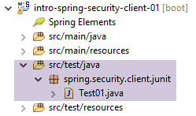 |
package client.tests.junit;
...
@SpringApplicationConfiguration(classes = DaoConfig.class)
@RunWith(SpringJUnit4ClassRunner.class)
public class Test01 {
// contexte Spring
@Autowired
private ApplicationContext context;
// couche [DAO]
@Autowired
private IDaoClient dao;
// utilisateurs
static private User admin;
static private User user;
static private User unknown;
@BeforeClass
public static void init() {
admin = new User("admin", "admin");
user = new User("user", "user");
unknown = new User("x", "y");
}
@Before
public void cleanAndFill() {
// on nettoie la base avant chaque test
log("Vidage de la base de données", 1);
// on vide la table [CATEGORIES] - par cascade la table [PRODUITS] va être vidée
dao.deleteAllCategories(admin);
// --------------------------------------------------------------------------------------
log("Remplissage de la base", 1);
// on remplit les tables
List<Categorie> categories = new ArrayList<Categorie>();
for (int i = 0; i < 2; i++) {
Categorie categorie = new Categorie(String.format("categorie%d", i));
for (int j = 0; j < 5; j++) {
categorie.addProduit(new Produit(String.format("produit%d%d", i, j), 100 * (1 + (double) (i * 10 + j) / 100),
String.format("desc%d%d", i, j)));
}
categories.add(categorie);
}
// ajout de la catégorie - par cascade les produits vont eux aussi être insérés
dao.addCategories(admin, categories);
}
@Test
public void showDataBase() throws BeansException, JsonProcessingException {
// liste des catégories
log("Liste des catégories", 2);
List<Categorie> categories = dao.getAllCategories(admin);
affiche(categories, context.getBean("jsonMapperCategorieWithoutProduits", ObjectMapper.class));
// liste des produits
log("Liste des produits", 2);
List<Produit> produits = dao.getAllProduits(admin);
affiche(produits, context.getBean("jsonMapperProduitWithoutCategorie", ObjectMapper.class));
// quelques vérifications
Assert.assertEquals(2, categories.size());
Assert.assertEquals(10, produits.size());
Categorie categorie = findCategorieByName("categorie0", categories);
Assert.assertNotNull(categorie);
Produit produit = findProduitByName("produit03", produits);
Assert.assertNotNull(produit);
Long idCategorie = produit.getIdCategorie();
Assert.assertEquals(categorie.getId(), idCategorie);
}
...
@Test()
public void checkUserUser() {
ServiceException se = null;
try {
dao.authenticate(user);
} catch (ServiceException e) {
se = e;
}
Assert.assertNotNull(se);
Assert.assertEquals("403 Forbidden", se.getMessages().get(0));
}
@Test()
public void checkUserUnknown() {
ServiceException se = null;
try {
dao.authenticate(unknown);
} catch (ServiceException e) {
se = e;
}
Assert.assertNotNull(se);
Assert.assertEquals("401 Unauthorized", se.getMessages().get(0));
}
@Test()
public void checkUserAdmin() {
ServiceException se = null;
try {
dao.authenticate(admin);
} catch (ServiceException e) {
se = e;
}
Assert.assertNull(se);
}
...
}
- lors de l'initialisation de la classe de test, lignes 21-26, trois utilisateurs sont créés :
- l'utilisateur [admin] a accès aux URL du service web, test lignes 96-104 ;
- l'utilisateur [user] existe mais n'est pas autorisé à utiliser les URL du service web, test lignes 71-81 ;
- l'utilisateur [unknown] n'existe pas, test lignes 83-93 ;
- les méthodes de tests sont celles déjà vues pour le service web non sécurisé, si ce n'est que les méthodes de l'interface [IDaoClient] sont appelées avec comme premier paramètre, l'utilisateur [admin] qui a le droit d'utiliser les URL ;
Le test passe mais on peut constater qu'il est plus lent qu'avec le service web non sécurisé. La sécurisation d'une application augmente sensiblement ses temps de réponse. On peut noter un facteur important dans les performances du service web sécurisé : dans la classe [AppConfig] qui le configure, nous avons écrit :
@Override
protected void configure(HttpSecurity http) throws Exception {
// CSRF
http.csrf().disable();
// application sécurisée ?
if (activateSecurity) {
// le mot de passe est transmis par le header Authorization: Basic xxxx
http.httpBasic();
// la méthode HTTP OPTIONS doit être autorisée pour tous
http.authorizeRequests() //
.antMatchers(HttpMethod.OPTIONS, "/", "/**").permitAll();
// seul le rôle ADMIN peut utiliser l'application
http.authorizeRequests() //
.antMatchers("/", "/**") // toutes les URL
.hasRole("ADMIN");
// pas de session
http.sessionManagement().sessionCreationPolicy(SessionCreationPolicy.STATELESS);
}
}
La ligne 17 a un coût. Elle force l'utilisateur à s'authentifier à chaque accès. Si on la met en commentaires, la durée du test JUnit précédent passe de 10,57 secondes à 4,21 secondes, ceci parce que l'utilisateur [admin] ne s'authentifie que pour le premier test et pas pour les suivants (même si l'entête HTTP d'authentification est envoyé par le client, le serveur lui ne revérifie pas le mot de passe de l'utilisateur). Avec un service web non sécurisé, la durée du test JUnit tombe à 2,33 secondes.